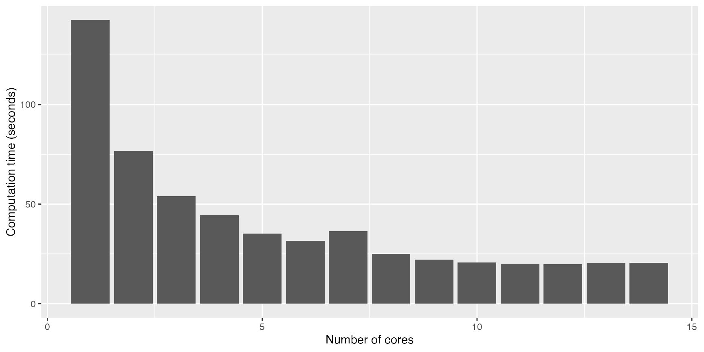
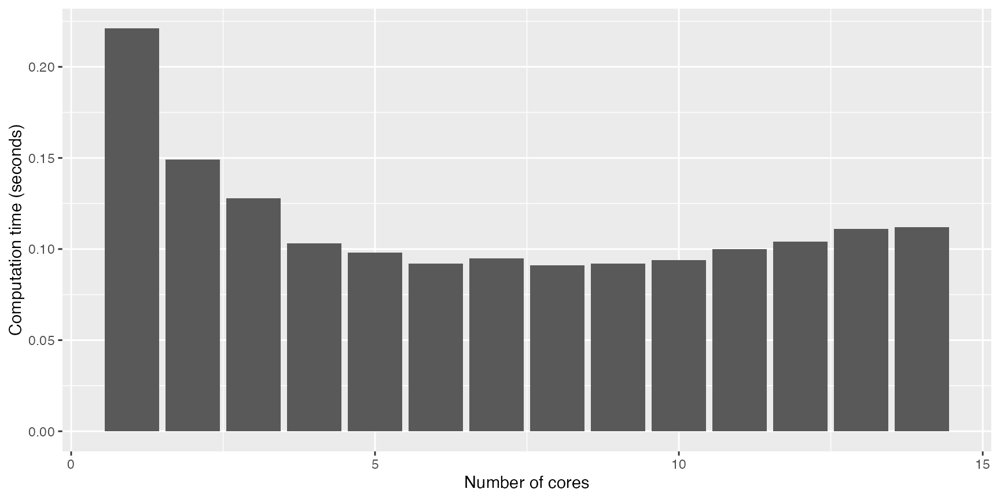

The calculations done by functions smart_charging or
optimize_demand can be done by multiple time windows in
parallel. At the same time, in computer science, a common practice to
reduce computation times is parallel processing when the computer has
multiple CPUs (i.e. multi-core processing). In parallel processing, a
task is divided into multiple sub-tasks and assigned to multiple cores
to make de calculations in parallel. For parallel processing in R we
make use of the R base package parallel.
We can discover the number of physical CPUs in our computer with
function parallel::detectCores:
n_cores <- parallel::detectCores(logical = FALSE)
print(n_cores)## [1] 14We set the parameter logical = FALSE because it is
important to know the physical CPUs, not the logical
(or virtual/thread) ones seen by the OS. More information about this
parameter can be found in parallel::detectCores
documentation.
Below you can find some demonstrations of parallel processing using flextools. Note that in all demonstrations, the optimal number of cores to use is around 6, since from this value no big improvement is achieved. So, remember, more doesn’t always mean better.
Smart charging
Below, an example of calculating smart_charging of
10.000 EV charging sessions with different number of cores:
sessions <- evsim::california_ev_sessions_profiles %>%
slice_head(n = 10000) %>%
evsim::adapt_charging_features(time_resolution = 15)
sessions_demand <- evsim::get_demand(sessions, resolution = 15, mc.cores = n_cores)
opt_data <- tibble(
datetime = sessions_demand$datetime,
production = 0
)
cores_time <- tibble(
cores = 1:n_cores,
time = 0
)
for (mcc in cores_time$cores) {
results <- system.time(
smart_charging(
sessions, opt_data, opt_objective = "grid", method = "curtail",
window_days = 1, window_start_hour = 5, mc.cores = mcc
)
)
cores_time$time[mcc] <- as.numeric(results[3])
}And below there’s the plot of the results, were we can see that, for this computer, the optimal number of cores to use is 6, since from this value no big improvement is achieved:
cores_time %>%
ggplot(aes(x = cores, y = time)) +
geom_col() +
labs(x = "Number of cores", y = "Computation time (seconds)")
Demand optimization
Below, an example of optimize_demand for the
building profile with different number of cores:
opt_data <- flextools::energy_profiles %>%
rename(
production = "solar",
flexible = "building"
)
cores_time <- tibble(
cores = 1:n_cores,
time = 0
)
for (mcc in cores_time$cores) {
results <- system.time(
opt_data %>%
optimize_demand(
opt_objective = 0.5,
direction = "backward",
flex_window_hours = 6,
time_horizon = 12,
mc.cores = mcc
)
)
cores_time$time[mcc] <- as.numeric(results[3])
}And below there’s the plot of the results, were we can see that, for this computer, the optimal number of cores to use is 6, since from this value no big improvement is achieved:
cores_time %>%
ggplot(aes(x = cores, y = time)) +
geom_col() +
labs(x = "Number of cores", y = "Computation time (seconds)")
Battery optimization
Below, an example of add_battery_optimization with
different number of cores:
opt_data <- flextools::energy_profiles %>%
rename(
production = "solar"
) %>%
select(any_of(c(
"datetime", "production", "building", "price_imported", "price_exported"
))) %>%
mutate(
static = building
)
opt_battery <-
cores_time <- tibble(
cores = 1:n_cores,
time = 0
)
for (mcc in cores_time$cores) {
results <- system.time(
opt_data %>%
add_battery_optimization(
opt_objective = 0.5,
Bcap = 50, Bc = 4, Bd = 4,
window_start_hour = 5,
mc.cores = mcc
)
)
cores_time$time[mcc] <- as.numeric(results[3])
}And below there’s the plot of the results, were we can see that, for this computer, the optimal number of cores to use is 6, since from this value no big improvement is achieved:
cores_time %>%
ggplot(aes(x = cores, y = time)) +
geom_col() +
labs(x = "Number of cores", y = "Computation time (seconds)")